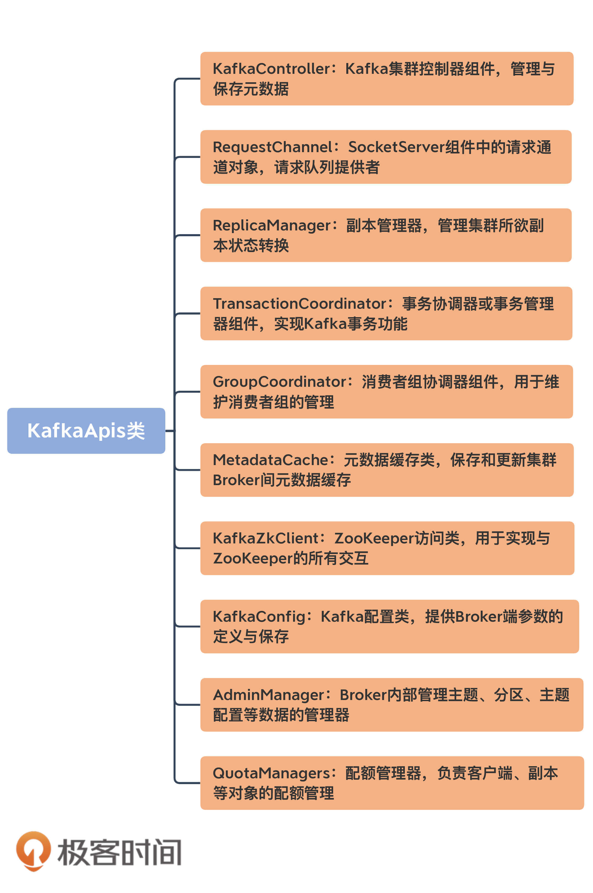

- 00 导读 构建Kafka工程和源码阅读环境、Scala语言热身.md
- 00 开篇词 阅读源码，逐渐成了职业进阶道路上的“必选项”.md
- 00 重磅加餐 带你快速入门Scala语言.md
- 01 日志段：保存消息文件的对象是怎么实现的？.md
- 02 日志（上）：日志究竟是如何加载日志段的？.md
- 03 日志（下）：彻底搞懂Log对象的常见操作.md
- 04 索引（上）：改进的二分查找算法在Kafka索引的应用.md
- 05 索引（下）：位移索引和时间戳索引的区别是什么？.md
- 06 请求通道：如何实现Kafka请求队列？.md
- 07 SocketServer（上）：Kafka到底是怎么应用NIO实现网络通信的？.md
- 08 SocketServer（中）：请求还要区分优先级？.md
- 09 SocketServer（下）：请求处理全流程源码分析.md
- 10 KafkaApis：Kafka最重要的源码入口，没有之一.md
- 11 Controller元数据：Controller都保存有哪些东西？有几种状态？.md
- 12 ControllerChannelManager：Controller如何管理请求发送？.md
- 13 ControllerEventManager：变身单线程后的Controller如何处理事件？.md
- 14 Controller选举是怎么实现的？.md
- 15 如何理解Controller在Kafka集群中的作用？.md
- 16 TopicDeletionManager： Topic是怎么被删除的？.md
- 17 ReplicaStateMachine：揭秘副本状态机实现原理.md
- 18 PartitionStateMachine：分区状态转换如何实现？.md
- 19 TimingWheel：探究Kafka定时器背后的高效时间轮算法.md
- 20 DelayedOperation：Broker是怎么延时处理请求的？.md
- 21 AbstractFetcherThread：拉取消息分几步？.md
- 22 ReplicaFetcherThread：Follower如何拉取Leader消息？.md
- 23 ReplicaManager（上）：必须要掌握的副本管理类定义和核心字段.md
- 24 ReplicaManager（中）：副本管理器是如何读写副本的？.md
- 25 ReplicaManager（下）：副本管理器是如何管理副本的？.md
- 26 MetadataCache：Broker是怎么异步更新元数据缓存的？.md
- 27 消费者组元数据（上）：消费者组都有哪些元数据？.md
- 28 消费者组元数据（下）：Kafka如何管理这些元数据？.md
- 29 GroupMetadataManager：组元数据管理器是个什么东西？.md
- 30 GroupMetadataManager：位移主题保存的只是位移吗？.md
- 31 GroupMetadataManager：查询位移时，不用读取位移主题？.md
- 32 GroupCoordinator：在Rebalance中，Coordinator如何处理成员入组？.md
- 33 GroupCoordinator：在Rebalance中，如何进行组同步？.md
- 特别放送（一）经典的Kafka学习资料有哪些？.md
- 特别放送（三）我是怎么度过日常一天的？.md
- 特别放送（二）一篇文章带你了解参与开源社区的全部流程.md
- 特别放送（五） Kafka 社区的重磅功能：移除 ZooKeeper 依赖.md
- 特别放送（四）20道经典的Kafka面试题详解.md
- 结束语 源码学习，我们才刚上路呢.md
10 KafkaApis：Kafka最重要的源码入口，没有之一
你好，我是胡夕。今天，我们来收尾Kafka请求处理模块的源码学习。讲到这里，关于整个模块，我们还有最后一个知识点尚未掌握，那就是KafkaApis类。
在上节课中，我提到过，请求的实际处理逻辑是封装在KafkaApis类中的。你一定很想知道，这个类到底是做什么的吧。
实际上，我一直认为，KafkaApis是Kafka最重要的源码入口。因为，每次要查找Kafka某个功能的实现代码时，我们几乎总要从这个KafkaApis.scala文件开始找起，然后一层一层向下钻取，直到定位到实现功能的代码处为止。比如，如果你想知道创建Topic的流程，你只需要查看KafkaApis的handleCreateTopicsRequest方法；如果你想弄懂Consumer提交位移是怎么实现的，查询handleOffsetCommitRequest方法就行了。
除此之外，在这一遍遍的钻取过程中，我们还会慢慢地掌握Kafka实现各种功能的代码路径和源码分布，从而建立起对整个Kafka源码工程的完整认识。
如果这些还不足以吸引你阅读这部分源码，那么，我再给你分享一个真实的案例。
之前，在使用Kafka时，我发现，Producer程序一旦向一个不存在的主题发送消息，在创建主题之后，Producer端会抛出一个警告：
Error while fetching metadata with correlation id 3 : {test-topic=LEADER_NOT_AVAILABLE} (org.apache.kafka.clients.NetworkClient)
我一直很好奇，这里的LEADER_NOT_AVAILABLE异常是在哪里抛出来的。直到有一天，我在浏览KafkaApis代码时，突然发现了createTopics方法的这两行代码：
private def createTopic(topic: String,
numPartitions: Int, replicationFactor: Int,
properties: util.Properties = new util.Properties()): MetadataResponseTopic = {
try {
adminZkClient.createTopic(topic, numPartitions, replicationFactor, properties, RackAwareMode.Safe)
......
// 显式封装一个LEADER_NOT_AVAILABLE Response
metadataResponseTopic(Errors.LEADER_NOT_AVAILABLE, topic, isInternal(topic), util.Collections.emptyList())
} catch {
......
}
}
这时，我才恍然大悟，原来，Broker端创建完主题后，会显式地通知Clients端LEADER_NOT_AVAILABLE异常。Clients端接收到该异常后，会主动更新元数据，去获取新创建主题的信息。你看，如果不是亲自查看源代码，我们是无法解释这种现象的。
那么，既然KafkaApis这么重要，现在，我们就来看看这个大名鼎鼎的入口文件吧。我会先给你介绍下它的定义以及最重要的handle方法，然后再解释一下其他的重要方法。学完这节课以后，你就能掌握，从KafkaApis类开始去寻找单个功能具体代码位置的方法了。
事实上，相比于之前更多是向你分享知识的做法，这节课我分享的是学习知识的方法。
KafkaApis类定义
好了， 我们首先来看下KafkaApis类的定义。KafkaApis类定义在源码文件KafkaApis.scala中。该文件位于core工程的server包下，是一个将近3000行的巨型文件。好在它实现的逻辑并不复杂，绝大部分代码都是用来处理所有Kafka请求类型的，因此，代码结构整体上显得非常规整。一会儿我们在学习handle方法时，你一定会所有体会。
KafkaApis类的定义代码如下：
class KafkaApis(
val requestChannel: RequestChannel, // 请求通道
val replicaManager: ReplicaManager, // 副本管理器
val adminManager: AdminManager, // 主题、分区、配置等方面的管理器
val groupCoordinator: GroupCoordinator, // 消费者组协调器组件
val txnCoordinator: TransactionCoordinator, // 事务管理器组件
val controller: KafkaController, // 控制器组件
val zkClient: KafkaZkClient, // ZooKeeper客户端程序，Kafka依赖于该类实现与ZooKeeper交互
val brokerId: Int, // broker.id参数值
val config: KafkaConfig, // Kafka配置类
val metadataCache: MetadataCache, // 元数据缓存类
val metrics: Metrics,
val authorizer: Option[Authorizer],
val quotas: QuotaManagers, // 配额管理器组件
val fetchManager: FetchManager,
brokerTopicStats: BrokerTopicStats,
val clusterId: String,
time: Time,
val tokenManager: DelegationTokenManager) extends Logging {
type FetchResponseStats = Map[TopicPartition, RecordConversionStats]
this.logIdent = "[KafkaApi-%d] ".format(brokerId)
val adminZkClient = new AdminZkClient(zkClient)
private val alterAclsPurgatory = new DelayedFuturePurgatory(purgatoryName = "AlterAcls", brokerId = config.brokerId)
......
}
我为一些重要的字段添加了注释信息。为了方便你理解，我还画了一张思维导图，罗列出了比较重要的组件：

从这张图可以看出，KafkaApis下可谓是大牌云集。放眼整个源码工程，KafkaApis关联的“大佬级”组件都是最多的！在KafkaApis中，你几乎能找到Kafka所有重量级的组件，比如，负责副本管理的ReplicaManager、维护消费者组的GroupCoordinator以及操作Controller组件的KafkaController，等等。
在处理不同类型的RPC请求时，KafkaApis会用到不同的组件，因此，在创建KafkaApis实例时，我们必须把可能用到的组件一并传给它，这也是它汇聚众多大牌组件于一身的原因。
我说KafkaApis是入口类的另一个原因也在于此。你完全可以打开KafkaApis.scala文件，然后根据它的定义一个一个地去研习这些重量级组件的实现原理。等你对这些组件的代码了然于胸了，说不定下一个写源码课的人就是你了。
KafkaApis方法入口
那，作为Kafka源码的入口类，它都定义了哪些方法呢？
如果你翻开KafkaApis类的代码，你会发现，它封装了很多以handle开头的方法。每一个这样的方法都对应于一类请求类型，而它们的总方法入口就是handle方法。实际上，你完全可以在handle方法间不断跳转，去到任意一类请求被处理的实际代码中。下面这段代码就是handle方法的完整实现，我们来看一下：
def handle(request: RequestChannel.Request): Unit = {
try {
trace(s"Handling request:${request.requestDesc(true)} from connection ${request.context.connectionId};" +
s"securityProtocol:${request.context.securityProtocol},principal:${request.context.principal}")
// 根据请求头部信息中的apiKey字段判断属于哪类请求
// 然后调用响应的handle***方法
// 如果新增RPC协议类型，则：
// 1. 添加新的apiKey标识新请求类型
// 2. 添加新的case分支
// 3. 添加对应的handle***方法
request.header.apiKey match {
case ApiKeys.PRODUCE => handleProduceRequest(request)
case ApiKeys.FETCH => handleFetchRequest(request)
case ApiKeys.LIST_OFFSETS => handleListOffsetRequest(request)
case ApiKeys.METADATA => handleTopicMetadataRequest(request)
case ApiKeys.LEADER_AND_ISR => handleLeaderAndIsrRequest(request)
case ApiKeys.STOP_REPLICA => handleStopReplicaRequest(request)
case ApiKeys.UPDATE_METADATA => handleUpdateMetadataRequest(request)
case ApiKeys.CONTROLLED_SHUTDOWN => handleControlledShutdownRequest(request)
case ApiKeys.OFFSET_COMMIT => handleOffsetCommitRequest(request)
case ApiKeys.OFFSET_FETCH => handleOffsetFetchRequest(request)
case ApiKeys.FIND_COORDINATOR => handleFindCoordinatorRequest(request)
case ApiKeys.JOIN_GROUP => handleJoinGroupRequest(request)
case ApiKeys.HEARTBEAT => handleHeartbeatRequest(request)
case ApiKeys.LEAVE_GROUP => handleLeaveGroupRequest(request)
case ApiKeys.SYNC_GROUP => handleSyncGroupRequest(request)
case ApiKeys.DESCRIBE_GROUPS => handleDescribeGroupRequest(request)
case ApiKeys.LIST_GROUPS => handleListGroupsRequest(request)
case ApiKeys.SASL_HANDSHAKE => handleSaslHandshakeRequest(request)
case ApiKeys.API_VERSIONS => handleApiVersionsRequest(request)
case ApiKeys.CREATE_TOPICS => handleCreateTopicsRequest(request)
case ApiKeys.DELETE_TOPICS => handleDeleteTopicsRequest(request)
case ApiKeys.DELETE_RECORDS => handleDeleteRecordsRequest(request)
case ApiKeys.INIT_PRODUCER_ID => handleInitProducerIdRequest(request)
case ApiKeys.OFFSET_FOR_LEADER_EPOCH => handleOffsetForLeaderEpochRequest(request)
case ApiKeys.ADD_PARTITIONS_TO_TXN => handleAddPartitionToTxnRequest(request)
case ApiKeys.ADD_OFFSETS_TO_TXN => handleAddOffsetsToTxnRequest(request)
case ApiKeys.END_TXN => handleEndTxnRequest(request)
case ApiKeys.WRITE_TXN_MARKERS => handleWriteTxnMarkersRequest(request)
case ApiKeys.TXN_OFFSET_COMMIT => handleTxnOffsetCommitRequest(request)
case ApiKeys.DESCRIBE_ACLS => handleDescribeAcls(request)
case ApiKeys.CREATE_ACLS => handleCreateAcls(request)
case ApiKeys.DELETE_ACLS => handleDeleteAcls(request)
case ApiKeys.ALTER_CONFIGS => handleAlterConfigsRequest(request)
case ApiKeys.DESCRIBE_CONFIGS => handleDescribeConfigsRequest(request)
case ApiKeys.ALTER_REPLICA_LOG_DIRS => handleAlterReplicaLogDirsRequest(request)
case ApiKeys.DESCRIBE_LOG_DIRS => handleDescribeLogDirsRequest(request)
case ApiKeys.SASL_AUTHENTICATE => handleSaslAuthenticateRequest(request)
case ApiKeys.CREATE_PARTITIONS => handleCreatePartitionsRequest(request)
case ApiKeys.CREATE_DELEGATION_TOKEN => handleCreateTokenRequest(request)
case ApiKeys.RENEW_DELEGATION_TOKEN => handleRenewTokenRequest(request)
case ApiKeys.EXPIRE_DELEGATION_TOKEN => handleExpireTokenRequest(request)
case ApiKeys.DESCRIBE_DELEGATION_TOKEN => handleDescribeTokensRequest(request)
case ApiKeys.DELETE_GROUPS => handleDeleteGroupsRequest(request)
case ApiKeys.ELECT_LEADERS => handleElectReplicaLeader(request)
case ApiKeys.INCREMENTAL_ALTER_CONFIGS => handleIncrementalAlterConfigsRequest(request)
case ApiKeys.ALTER_PARTITION_REASSIGNMENTS => handleAlterPartitionReassignmentsRequest(request)
case ApiKeys.LIST_PARTITION_REASSIGNMENTS => handleListPartitionReassignmentsRequest(request)
case ApiKeys.OFFSET_DELETE => handleOffsetDeleteRequest(request)
case ApiKeys.DESCRIBE_CLIENT_QUOTAS => handleDescribeClientQuotasRequest(request)
case ApiKeys.ALTER_CLIENT_QUOTAS => handleAlterClientQuotasRequest(request)
}
} catch {
// 如果是严重错误，则抛出异常
case e: FatalExitError => throw e
// 普通异常的话，记录下错误日志
case e: Throwable => handleError(request, e)
} finally {
// 记录一下请求本地完成时间，即Broker处理完该请求的时间
if (request.apiLocalCompleteTimeNanos < 0)
request.apiLocalCompleteTimeNanos = time.nanoseconds
}
}
如果你跟着这门课一直学习的话，你应该会发现，我很少贴某个类或方法的完整代码，因为没必要，还会浪费你的时间。但是，这个handle方法有点特殊，所以我把完整的代码展现给你。
它利用Scala语言中的模式匹配语法，完整地列出了对所有请求类型的处理逻辑。通过该方法，你能串联出Kafka处理任何请求的源码路径。我强烈推荐你在课下以几个比较重要的请求类型为学习目标，从handle方法出发，去探寻一下代码是如何为这些请求服务的，以加深你对Broker端代码的整体熟练度。这对你后续深入学习源码或解决实际问题非常有帮助。
从上面的代码中，你应该很容易就能找到其中的规律：这个方法是处理具体请求用的。处理每类请求的方法名均以handle开头，即handle×××Request。比如，处理PRODUCE请求的方法叫handleProduceRequest，处理FETCH请求的方法叫handleFetchRequest等。
如果你点开ApiKeys，你会发现，它实际上是一个枚举类型，里面封装了目前Kafka定义所有的RPC协议。值得一提的是，Kafka社区维护了一个官方文档，专门记录这些RPC协议，包括不同版本所需的Request格式和Response格式。
从这个handle方法中，我们也能得到这样的结论：每当社区添加新的RPC协议时，Broker端大致需要做三件事情。
- 更新ApiKeys枚举，加入新的RPC ApiKey；
- 在KafkaApis中添加对应的handle×××Request方法，实现对该RPC请求的处理逻辑；
- 更新KafkaApis的handle方法，添加针对RPC协议的case分支。
其他重要方法
抛开KafkaApis的定义和handle方法，还有几个常用的方法也很重要，比如，用于发送Response的一组方法，以及用于鉴权的方法。特别是前者，它是任何一类请求被处理之后都要做的必要步骤。毕竟，请求被处理完成还不够，Kafka还需要把处理结果发送给请求发送方。
首先就是sendResponse系列方法。
为什么说是系列方法呢？因为源码中带有sendResponse字眼的方法有7个之多。我分别来介绍一下。
- sendResponse（RequestChannel.Response）：最底层的Response发送方法。本质上，它调用了SocketServer组件中RequestChannel的sendResponse方法，我在前面的课程中讲到过，RequestChannel的sendResponse方法会把待发送的Response对象添加到对应Processor线程的Response队列上，然后交由Processor线程完成网络间的数据传输。
- sendResponse（RequestChannel.Request，responseOpt: Option[AbstractResponse]，onComplete: Option[Send => Unit]）：该方法接收的实际上是Request，而非Response，因此，它会在内部构造出Response对象之后，再调用sendResponse方法。
- sendNoOpResponseExemptThrottle：发送NoOpResponse类型的Response而不受请求通道上限流（throttling）的限制。所谓的NoOpResponse，是指Processor线程取出该类型的Response后，不执行真正的I/O发送操作。
- sendErrorResponseExemptThrottle：发送携带错误信息的Response而不受限流限制。
- sendResponseExemptThrottle：发送普通Response而不受限流限制。
- sendErrorResponseMaybeThrottle：发送携带错误信息的Response但接受限流的约束。
- sendResponseMaybeThrottle：发送普通Response但接受限流的约束。
这组方法最关键的还是第一个sendResponse方法。大部分类型的请求被处理完成后都会使用这个方法将Response发送出去。至于上面这组方法中的其他方法，它们会在内部调用第一个sendResponse方法。当然，在调用之前，这些方法通常都拥有一些定制化的逻辑。比如sendResponseMaybeThrottle方法就会在执行sendResponse逻辑前，先尝试对请求所属的请求通道进行限流操作。因此，我们要着重掌握第一个sendResponse方法是怎么将Response对象发送出去的。
就像我前面说的，KafkaApis实际上是把处理完成的Response放回到前端Processor线程的Response队列中，而真正将Response返还给Clients或其他Broker的，其实是Processor线程，而不是执行KafkaApis逻辑的KafkaRequestHandler线程。
另一个非常重要的方法是authorize方法，咱们看看它的代码：
private[server] def authorize(requestContext: RequestContext,
operation: AclOperation,
resourceType: ResourceType,
resourceName: String,
logIfAllowed: Boolean = true,
logIfDenied: Boolean = true,
refCount: Int = 1): Boolean = {
authorizer.forall { authZ =>
// 获取待鉴权的资源类型
// 常见的资源类型如TOPIC、GROUP、CLUSTER等
val resource = new ResourcePattern(resourceType, resourceName, PatternType.LITERAL)
val actions = Collections.singletonList(new Action(operation, resource, refCount, logIfAllowed, logIfDenied))
// 返回鉴权结果，是ALLOWED还是DENIED
authZ.authorize(requestContext, actions).asScala.head == AuthorizationResult.ALLOWED
}
}
这个方法是做授权检验的。目前，Kafka所有的RPC请求都要求发送者（无论是Clients，还是其他Broker）必须具备特定的权限。
接下来，我用创建主题的代码来举个例子，说明一下authorize方法的实际应用，以下是handleCreateTopicsRequest方法的片段：
// 是否具有CLUSTER资源的CREATE权限
val hasClusterAuthorization = authorize(request, CREATE, CLUSTER, CLUSTER_NAME, logIfDenied = false)
val topics = createTopicsRequest.data.topics.asScala.map(_.name)
// 如果具有CLUSTER CREATE权限，则允许主题创建，否则，还要查看是否具有TOPIC资源的CREATE权限
val authorizedTopics = if (hasClusterAuthorization) topics.toSet else filterAuthorized(request, CREATE, TOPIC, topics.toSeq)
// 是否具有TOPIC资源的DESCRIBE_CONFIGS权限
val authorizedForDescribeConfigs = filterAuthorized(request, DESCRIBE_CONFIGS, TOPIC, topics.toSeq, logIfDenied = false)
.map(name => name -> results.find(name)).toMap
results.asScala.foreach(topic => {
if (results.findAll(topic.name).size > 1) {
topic.setErrorCode(Errors.INVALID_REQUEST.code)
topic.setErrorMessage("Found multiple entries for this topic.")
} else if (!authorizedTopics.contains(topic.name)) { // 如果不具备CLUSTER资源的CREATE权限或TOPIC资源的CREATE权限，认证失败！
topic.setErrorCode(Errors.TOPIC_AUTHORIZATION_FAILED.code)
topic.setErrorMessage("Authorization failed.")
}
if (!authorizedForDescribeConfigs.contains(topic.name)) { // 如果不具备TOPIC资源的DESCRIBE_CONFIGS权限，设置主题配置错误码
topic.setTopicConfigErrorCode(Errors.TOPIC_AUTHORIZATION_FAILED.code)
}
})
......
这段代码调用authorize方法，来判断Clients方法是否具有创建主题的权限，如果没有，则显式标记TOPIC_AUTHORIZATION_FAILED，告知Clients端。目前，Kafka所有的权限控制均发生在KafkaApis中，即所有请求在处理前，都需要调用authorize方法做权限校验，以保证请求能够被继续执行。
KafkaApis请求处理实例解析
在了解了KafkaApis的代码结构之后，我拿一段真实的代码，来说明一下该类中某个协议处理方法大致的执行流程是什么样的，以便让你更清楚地了解请求处理逻辑。
值得注意的是，这里的请求处理逻辑和之前所说的请求处理全流程是有所区别的。今天，我们关注的是功能层面上请求被处理的逻辑代码，之前的请求处理全流程主要聚焦流程方面的代码，即一个请求从被发送到Broker端到Broker端返还Response的代码路径。应该这么说，所有类型请求的被处理流程都是相同的，但是，每类请求却有不同的功能实现逻辑，而这就是KafkaApis类中的各个handle×××Request方法要做的事情。
下面，我以handleListGroupsRequest方法为例来介绍一下。顾名思义，这是处理ListGroupsRequest请求的方法。这类请求的Response应该返回集群中的消费者组信息。我们来看下它的实现：
def handleListGroupsRequest(request: RequestChannel.Request): Unit = {
val (error, groups) = groupCoordinator.handleListGroups() // 调用GroupCoordinator的handleListGroups方法拿到所有Group信息
// 如果Clients具备CLUSTER资源的DESCRIBE权限
if (authorize(request, DESCRIBE, CLUSTER, CLUSTER_NAME))
// 直接使用刚才拿到的Group数据封装进Response然后发送
sendResponseMaybeThrottle(request, requestThrottleMs =>
new ListGroupsResponse(new ListGroupsResponseData()
.setErrorCode(error.code)
.setGroups(groups.map { group => new ListGroupsResponseData.ListedGroup()
.setGroupId(group.groupId)
.setProtocolType(group.protocolType)}.asJava
)
.setThrottleTimeMs(requestThrottleMs)
))
else {
// 找出Clients对哪些Group有GROUP资源的DESCRIBE权限，返回这些Group信息
val filteredGroups = groups.filter(group => authorize(request, DESCRIBE, GROUP, group.groupId))
sendResponseMaybeThrottle(request, requestThrottleMs =>
new ListGroupsResponse(new ListGroupsResponseData()
.setErrorCode(error.code)
.setGroups(filteredGroups.map { group => new ListGroupsResponseData.ListedGroup()
.setGroupId(group.groupId)
.setProtocolType(group.protocolType)}.asJava
)
.setThrottleTimeMs(requestThrottleMs)
))
}
}
我用一张流程图，来说明一下这个执行逻辑：

大体来看，handleListGroupsRequest方法的实现逻辑非常简单。通过GroupCoordinator组件获取到所有的消费者组信息之后，代码对这些Group进行了权限校验，并最终根据校验结果，决定给Clients返回哪些可见的消费者组。
总结
好了， 我们总结一下KafkaApis类的要点。如前所述，我们重点学习了KafkaApis类的定义及其重要方法handle。下面这些关键知识点，希望你能掌握。
- KafkaApis是Broker端所有功能的入口，同时关联了超多的Kafka组件。它绝对是你学习源码的第一入口。面对庞大的源码工程，如果你不知道从何下手，那就先从KafkaApis.scala这个文件开始吧。
- handle方法封装了所有RPC请求的具体处理逻辑。每当社区新增RPC协议时，增加对应的handle×××Request方法和case分支都是首要的。
- sendResponse系列方法负责发送Response给请求发送方。发送Response的逻辑是将Response对象放置在Processor线程的Response队列中，然后交由Processor线程实现网络发送。
- authorize方法是请求处理前权限校验层的主要逻辑实现。你可以查看一下官方文档，了解一下当前都有哪些权限，然后对照着具体的方法，找出每类RPC协议都要求Clients端具备什么权限。

至此，关于Kafka请求处理模块的内容，我们就全部学完了。在这个模块中，我们先从RequestChannel入手，探讨了Kafka中请求队列的实现原理，之后，我花了两节课的时间，重点介绍了SocketServer组件，包括Acceptor线程、Processor线程等子组件的源码以及请求被处理的全流程。今天，我们重点研究了KafkaApis类这个顶层的请求功能处理逻辑入口，补齐了请求处理的最后一块“拼图”。我希望你能够把这个模块的课程多看几遍，认真思考一下这里面的关键实现要点，彻底搞明白Kafka网络通信的核心机制。
从下节课开始，我们将进入鼎鼎有名的控制器（Controller）组件的源码学习。我会花5节课的时间，带你深入学习Controller的方方面面，敬请期待。
课后讨论
最后，请思考这样一个问题：如果一个Consumer要向Broker提交位移，它应该具备什么权限？你能说出KafkaApis中的哪段代码说明了所需的权限要求吗？
欢迎你在留言区写下你的思考和答案，跟我交流讨论，也欢迎你把今天的内容分享给你的朋友。
© 2019 - 2023 Liangliang Lee. Powered by Vert.x and hexo-theme-book.